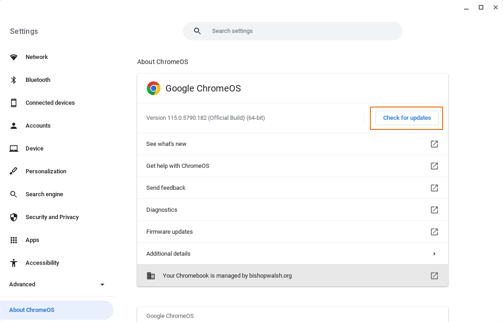
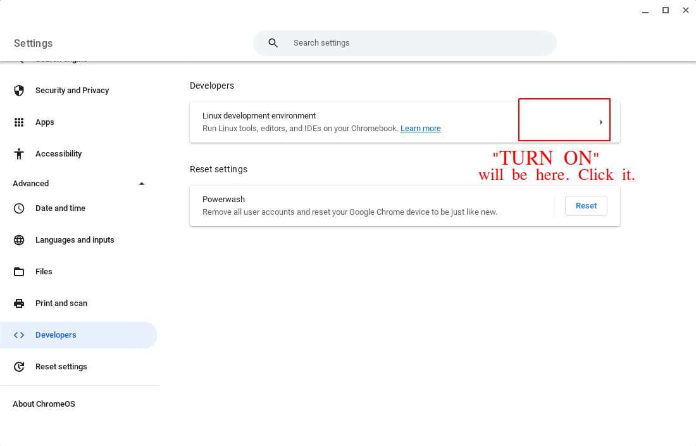
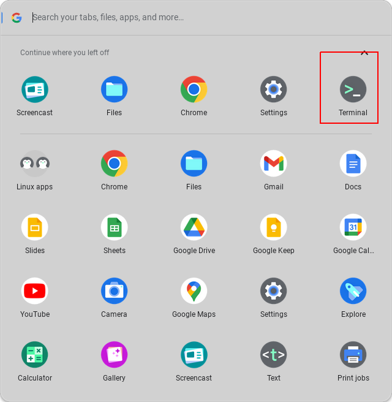
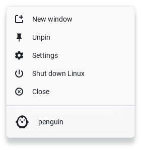
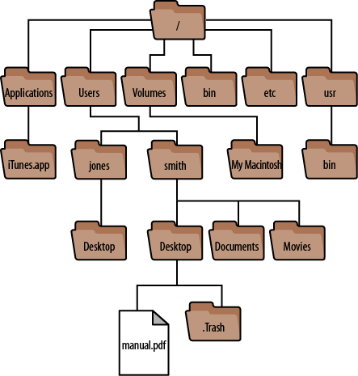
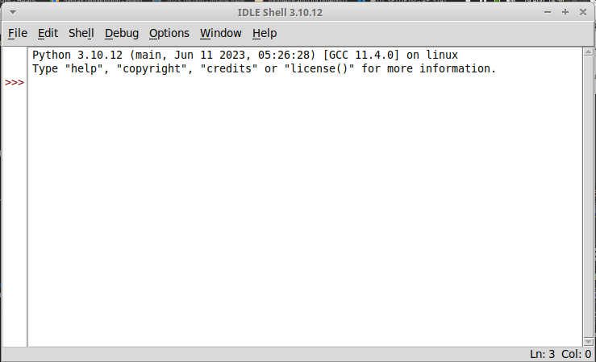
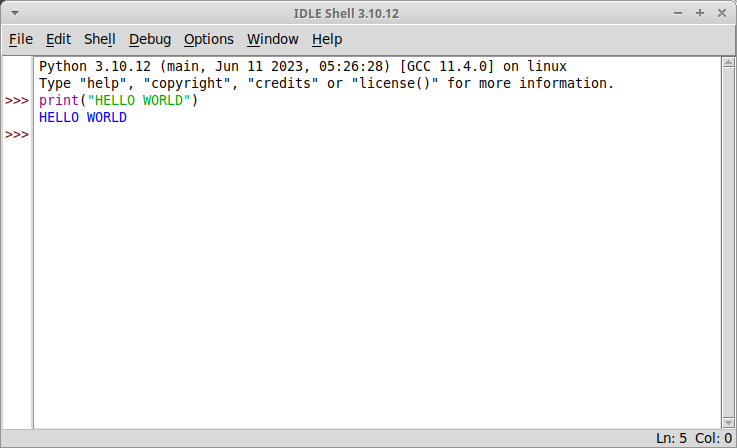
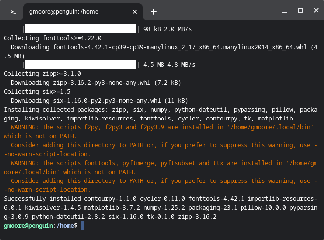

Python Setup#
Python will run on virtually any device with a processor. It supports all operating systems: Windows, Mac and Linux.
Links#
Python Installation#
Note
Ensure you are connected to the internet before attempting any of the commands on this page, especially Packages section. When you install third-party libraries into Python, your computer needs to reach out to the Python Package Index (PyPi), where all of the extra libraries are stored.
ChromeOS#
Step 1: Update ChromeOS#
Ensure you are on the latest version of the ChromeOS operating system.
Step 2: Enable Linux Subsystem#

Enable Linux Subsystem Video
Click on the image to play the video.
Enable and install Linux subsystem in the Settings menu,
This will give you access to something called the command line (sometimes called a terminal or a shell). The command line is a direct interface to the operating system of your laptop. Let’s take a look.
Step 3: Explore A Little#
A new world has now opened up to you, the world of Linux. Let’s take a little while to familiarize ourselves with it before moving on to Python. Open Linux command line (terminal),
Note
Pin the Linux terminal to your dock for quick access. At the bottom of the screen,
Right click the terminal icon (or whatever the equivalent of right-click is on the ChromeBook you are using) and then pin it,
In this image, it’s already pinned. In place of Unpinned, you will see Pinned.
This is your operating system. Let’s try a few commands here and see what we can see. You can type (or copy and paste) the next command directly into the cursor of the terminal,
echo "Hello World"
Press ENTER and you shoud see the words “Hello World” print to screen. The echo command, as you might have guessed, simply prints the words (a string of text) you give it back to screen,
Not very useful. Let’s try something a little more interesting,
df
Press ENTER and you will see something along the lines of (the actual output will vary from computer to computer),
These are your computer filesystems. This is where all of the data on your computer lives. Let’s not mess around with it. While you can’t physically break your computer by entering commands, it is possible to break your operating system to the point where it will need re-installed. That is not something you want to happen. For that reason, let’s move on to other, safer areas.
The Linux world is a hierarchy of files. Everything in Linux is a file, even folders.
Note
Folders are called directories in Linux.
You can imagine a tree like the following picture exists somewhere inside your computer,
When you open your terminal, you open it in one of the folders in this tree. The terminal allows you traverse the different nodes and branches of this tree. To see where you currently located in the tree, type the following command and press ENTER,
pwd
This stands for “present working directory”. When you type ENTER, you will see a file path print to screen. This is the directory where you terminal is currently idling. You can see the contents of the present working directory with the command,
ls
This will list the contents of the directory to screen,

You can change directories with the next command,
cd <path>
Where <path> is the location of the directory into which you would like to go.
You can move up the file hierarchy by typing,
cd ..
If you then print the present working directory, you will see the directory you were just in.
pwd
Alright, that was fun. However, this class isn’t about learning the ins and outs of Linux. This section was merely to show you for what the terminal is used: issuing commands.
Step 3: Install Python#
Python should come pre-installed in most Linux distributions. Open a terminal and verify your installation with the following command,
python3 --version
Output:
3.10.12
Note
Any version of Python greater than 3.7 will be sufficient for the purposes of this class.
If you get an error along the lines of “bash: python command not found”, you will need to install Python. You can do this through the Linux package repository, an online library of software that you can install from the command line,
sudo apt-get install python3
Warning
Make sure you install Python3. Python2, an older version, is still available to be installed. If you encounter any unknown errors through the course of this class, the first thing you should check is what version of Python you are running.
Once this command completes, verify you installation by printing the version to screen,
python3 --version
Output:
3.10.12
Step 4: Install Libraries#

Install Libraries
Click on the image to play the video.
Python alone is not enough. We need to plugin some additional functionality to the bare bones installation of Python.
In order to create graphics, we need a graphics library.
The following command installs a PNG/JPEG rendering engine on your ChromeBook,
sudo apt-get install python3-tk
We are currently installing from the Linux package repository. We will need a way to install Python packages as well.
The following command installs the Python package manager,
sudo apt-get install python3-pip
Lastly, while the command line is fun tool, it would be nice to have an text editor to develop Python programs. IDLE is the solution to this problem. We will talk more about this editor in the next section. For now, you can install it with the following command,
sudo apt-get install idle3
Congratulation, you are now setup to run Python scripts on your ChromeBook.
Other Operating Systems#
If you want to install Python on your home PC or laptop, you can download the official installer on found the Python website and follow the steps in this section,
Go to https://www.python.org/downloads* and click the Download button,
Download the appriopriate operating system distribution,
Ensure the option “Add Python to the PATH” is checked,
Ensure all of the following options are checked,
All of the other defaults are fine. Proceed with the installation. When it is done, you will now have icons for the Python interpreter and IDLE in your start menu (or your app launcher, if you’re one of the weird Mac people.)
Interpretter#

Python Interpretter and IDLE
Click on the image to play the video.
Once Python is installed, you will have access to the python command on the terminal. Open a Linux and verify your installation with the following command,
python3 --version
If you see a version print out, you are good to go. If you get an error that says “bash: python command not found”, head back to the previous section and make sure you completed all of the steps.
You can start an interpretter session with,
python3
Output:
Python 3.10.12 (main, Jun 11 2023, 05:26:28) [GCC 11.4.0] on linux
Type “help”, “copyright”, “credits” or “license” for more information.
>>>
This will bring up the Python shell, which allows you to enter commands and expressions line by line. If your version does not exactly match the output above, you will be fine as long as you are on atleast Version 3.7 of Python.
Up to this point we have been allowing Linux to intrepret our commands. We are now handing off that responsiblity to Python. Like Linux, Python interprets your commands after you type ENTER.
For example, type the following arithmetical expression and then type ENTER to execute it,
5 + 7
Output:
12
You can also print text to screen with the print() function, similar to (but not exactly like) Linux’s echo function,
print("Hello world")
Output:
Hello world
We won’t use the interpretter much in this class, but it is a handy tool to quickly check if a expression you had in mind is syntactical. For example, you might want to square a number and try,
3 ^ 3
Output:
0
However, this is not how you raise a number to a power in Python. Instead you use the “**” operator,
2 ** 2
Output:
4
The interpretter allows you to experiment with Python and get a feel for it. However, as previously mentioned, for this class, we will almost always be writing Scripts.
To exit the interpretter, type and execute,
exit()
Scripts#
Python scripts are files that have a .py extension. .py files are just files containing plain text, but anything that ends in .py will be understood by the Python Interpretter as a set of executable instrutions, so you can’t write just any text in this file. You have to write words that exist in the Python language. Anytime we do a lab in this class, you will be writing a script.
As an example, create a new file named test.py and open it in a text editor (actually, you will want to use IDLE, but we haven’t gotten to that part yet, so any old text editor will do for now)
the_meaning_of_life = 42
print("The meaning of life is: ", the_meaning_of_life)
Save the file and open a Linux terminal (or command prompt if you are using your personal computer). Pass the name of the file to the Python interpretter and something magical will happen,
python3 test.py
The following text should print to screen,
The meaning of life is: 42
Congratulations, you have just written your first Python script. In the labs for this class, when you are asked to create and run a Python script, this is essentially what you will be doing:
creating a
.pyfiletelling the Python interpretter your file name.
However, IDLE will make this whole process much less painful, so continue onto the next section, dear reader.
IDLE#
Python (usually) ships with a program named IDLE. IDLE stands for Integrated Development and Learning Environment. IDLE is a text editor integrated with a Python interpretter. It provides syntax highlighting, the ability to save and execute scripts, and a debugger for stepping through the programs. In other words, it’s got what we need.
Open up an IDLE session,
This is another version of the Python interpretter we encountered a few sections ago, sometimes referred to as a shell. You can execute the exact same commands in this shell as in the previous section, e.g.,
If you navigate to the File > New File menu option in the top left corner to the IDLE shell (you may also hit the CTRL + N keys at the same time), it will open a text editor,
You can type commands into this editor, as pictured. You can run these commands by navigating to the Run > Run Module menu option in the top left corner (you may also hit F5). It will then prompt you to save the script, if you haven’t already. After saving it, the IDLE shell will reappear with the results of your script,
We will sometimes call the IDLE text editor a notebook.
Packages#
By default, Python comes installed with the Standard Library. The Standard Library is a collection of common functions and utilities. For instance, the math library is part of the Standard Library. math contains functions for computing trigonemtric ratios, calculating powers and roots, etc. You can use math functions by first import-ing the library and accessing its content with dot notation. Start an interpretter session and type,
import math
answer = math.factorial(20)
print(answer)
- Output:
2432902008176640000
This sequence of commands imports the math library, calls the factorial function with dot notation to compute \(n!\), stores the answer in the variable answer, and then prints it to screen.
Third-Party Packages#
math has plenty of functions that will be useful in this class, but it doesn’t have everything we need. Luckily, Python has a package manager that allows you to install third-party libraries. You use the pip command anytime you need to install any additional libraries or pacakges into Python. Open up a Linux Terminal and type,
pip3 --version
Output:
pip 22.0.2 from /usr/lib/python3/dist-packages/pip (python 3.10)
Note
Your output may not be exactly the same, depending on the version of Python 3 you are using.
You should see the version number print to screen. If you happen to see an error message that says something along the lines of `bash: pip3 command not found`, then you will need to install pip3 from the Linux package repository with the following command,
sudo apt-get install python3-pip
After this installation is complete, try verifying the pip version again,
pip3 --version
Output:
pip 22.0.2 from /usr/lib/python3/dist-packages/pip (python 3.10)
Now that you have pip3, we will need to install two additional packages for this class. matplotlib will be used to generate graphical representations of data. tkinter will be used to render the output of matplotlib into JPEG and PNG images. These packages can be installed through the command line. Open the Linux terminal on your ChromeBook (or the command prompt on your personal computer),
pip3 install matplotlib tk
Output:
Defaulting to user installation because normal site-packages is not writeable
- Collecting tk
Downloading tk-0.1.0-py3-none-any.whl (3.9 kB)
…
Installing collected packages: tk
Successfully installed tk-0.1.0
You should see the packages download and install into your system.
See the matplotlib section to learn more about using matplotlib to generate plots of data.